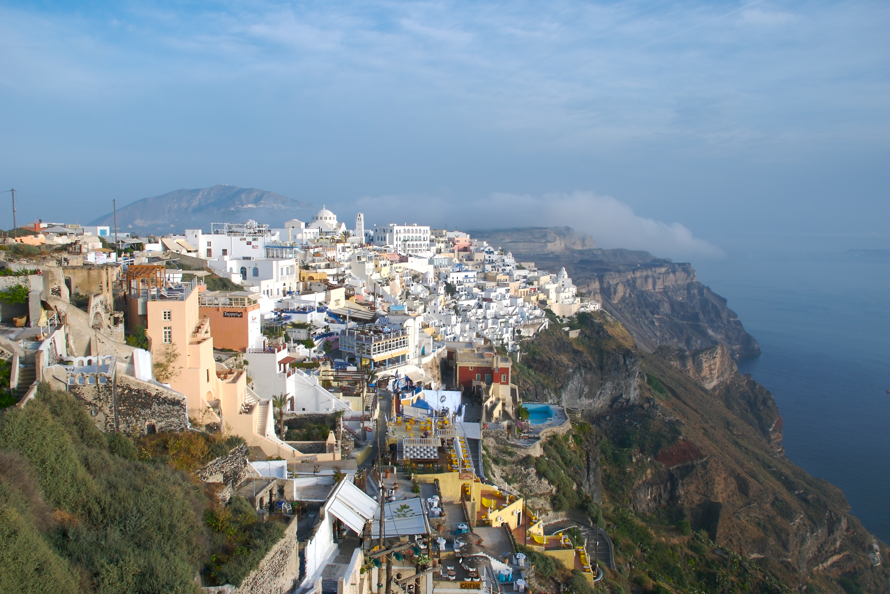

Η Σαντορίνη, Θήρα ή Στρογγύλη (παλαιότερη ονομασία) είναι νησί που βρίσκεται στο νότιο Αιγαίο πέλαγος, στο νησιωτικό σύμπλεγμα των Κυκλάδων, νότια της Ίου και δυτικά από την Ανάφη. Απέχει από τον Πειραιά 128 ναυτικά μίλια και 63 ναυτικά μίλια από τη Κρήτη. Ο Αθηνιός, το μεγαλύτερο λιμάνι του νησιού, έχει δημιουργηθεί στον ομώνυμο όρμο. Η έκταση της είναι 76,19 τετραγωνικά χιλιόμετρα. Σήμερα η Σαντορίνη είναι ένα από τα διασημότερα τουριστικά κέντρα του κόσμου.
Είναι γνωστή για το ηφαίστειο της. Η τελευταία ηφαιστειακή δραστηριότητα ήταν το έτος 1950. Τμήματα του ηφαιστείου της Σαντορίνης είναι: Η Νέα Καμένη (1707-1711 μ.Χ.), η Παλαιά Καμένη (46-47 μ.Χ.), το υποθαλάσσιο ηφαίστειο Κολούμπο(ενεργό) (1650 μ.Χ.), τα Χριστιανά νησιά. Η Σαντορίνη ανήκει στο ηφαιστειακό τόξο του Αιγαίου και χαρακτηρίζεται ενεργό ηφαίστειο μαζί με τα Μέθανα, την Μήλο και την Νίσυρο. Η Σαντορίνη καθώς και τα νησιά Θηρασία και Ασπρονήσι είναι απομεινάρια του ηφαιστειογενούς νησιού Στρογγύλη. Η Στρογγύλη ήταν ένας ηφαιστειακός κώνος. Το κεντρικό τμήμα της ανατινάχτηκε μαζί με τον κρατήρα του ηφαιστείου από τη Μινωική έκρηξη που έγινε το 1613 π.Χ. και είχε ως αποτέλεσμα τη δημιουργία αυτού που σήμερα ονομάζουμε καλδέρα της Σαντορίνης και την καταστροφή του προϊστορικού πολιτισμού του νησιού. Στο θαλάσσιο χάσμα που σχηματίστηκε μεταξύ Θήρας και Θηρασίας, που έχει βάθος 1.500 μέτρων, κατά καιρούς βγήκαν στην επιφάνεια ηφαιστειακοί κώνοι που σχημάτισαν τα εξής νησιά: την Παλαιά, τη Μικρή και τη Νέα Καμένη, την Καμένη Γεωργίου του Α΄, την Καμένη του Φουκέ, την Αφρόσσα και τη Δάφνη. Όλα αυτά τα νησιά μεγάλωναν σιγά-σιγά και ενώθηκαν, εκτός από την Παλαιά Καμένη.